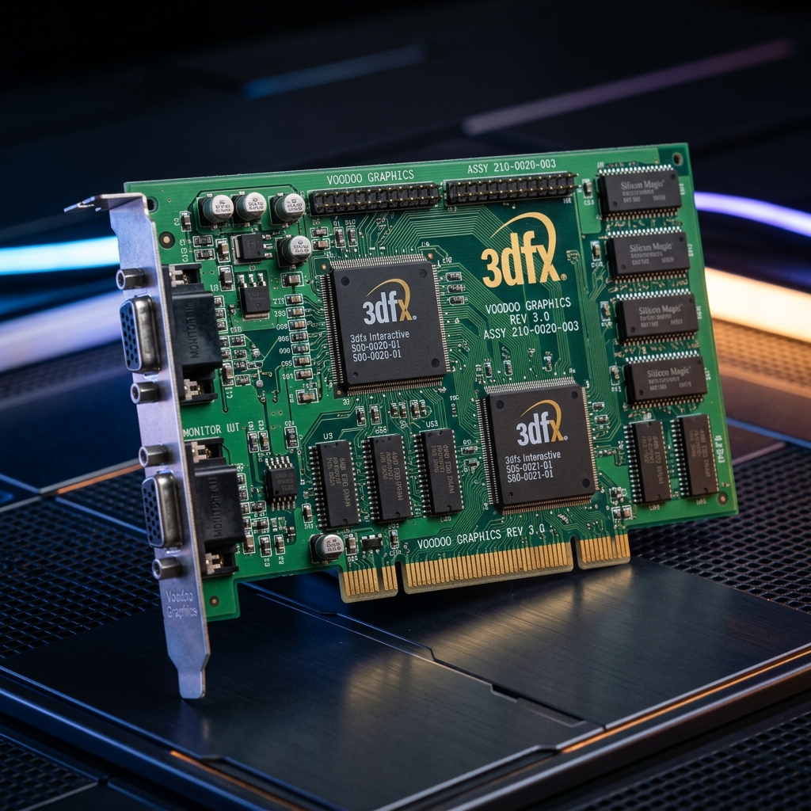
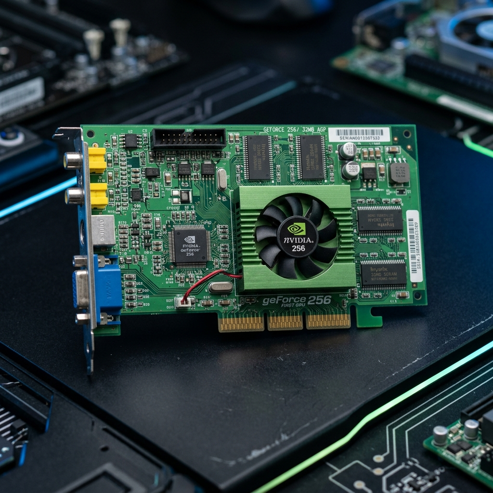
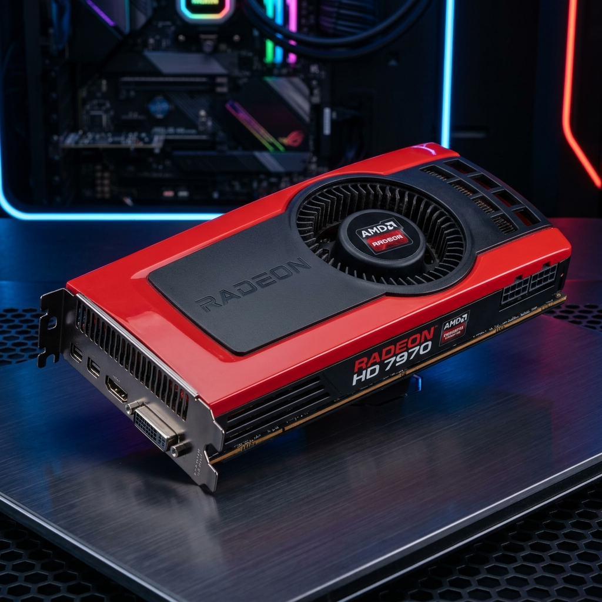
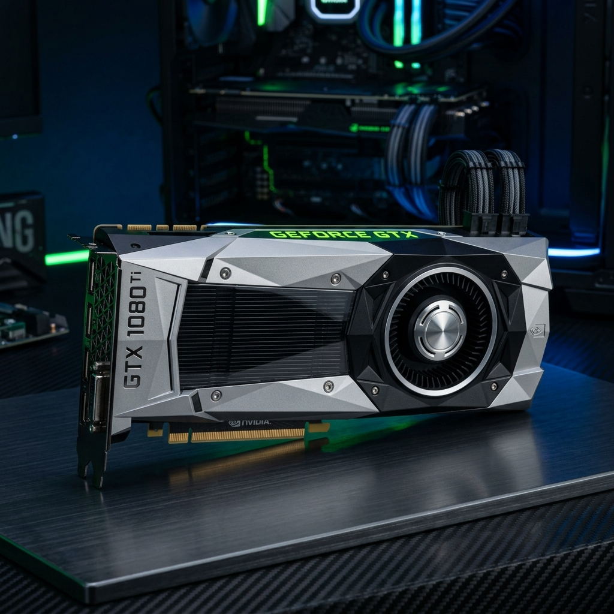

Desde los primeros aceleradores gráficos 2D en los años 80 hasta las supercomputadoras de IA actuales.
Explora cómo las innovaciones de una era sentaron las bases para la siguiente.
Las tarjetas gráficas que marcaron un antes y un después en la historia del hardware.

La tarjeta que inició la revolución del 3D. Antes de ella, los juegos se renderizaban principalmente por software con gráficos simples; después, entramos en la verdadera era tridimensional. Actuaba como una aceleradora 3D pura en conjunto con las tarjetas 2D existentes.

NVIDIA acuñó el término "GPU" (Graphics Processing Unit) con esta revolucionaria tarjeta. Fue pionera al integrar el cálculo de transformación e iluminación (T&L) directamente en el hardware, liberando así al procesador central de intensas cargas matemáticas.

La primera tarjeta gráfica en implementar la arquitectura GCN (Graphics Core Next). Su innovador diseño demostró ser excepcional, otorgándole una longevidad asombrosa y sirviendo como base tecnológica para múltiples consolas de videojuegos a lo largo de la década.

Para muchos entusiastas, es la GPU más legendaria de la era contemporánea. Construida sobre la increíblemente eficiente arquitectura Pascal, ofreció un salto generacional masivo en rendimiento que la mantuvo plenamente vigente frente a sus sucesoras durante años.